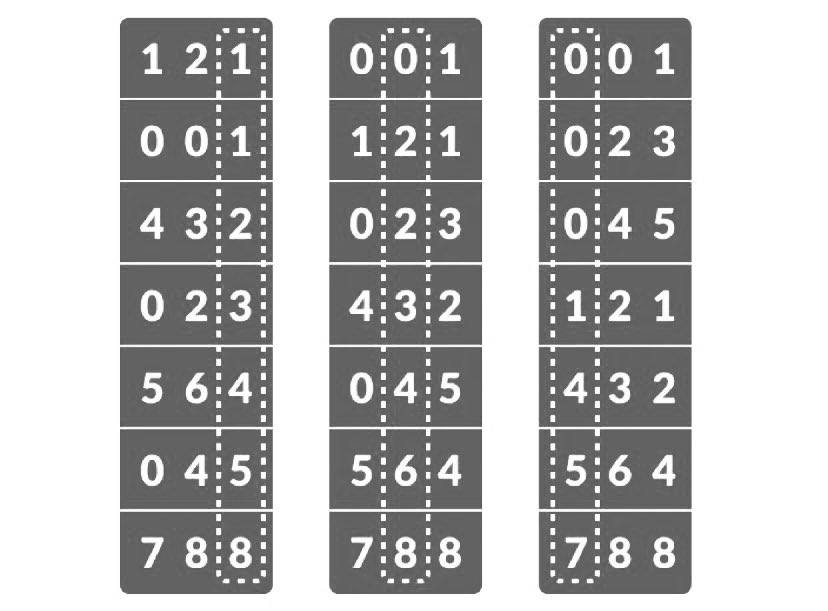

Características
El algoritmo radix sort tiene múltiples aplicaciones gracias a su rapidez y sus características, que lo diferencían del resto de los métodos de ordenamiento. Entre estas características se encuentran:
- Radix sort se puede aplicar a datos que se pueden ordenar lexicográficamente, ya sean números enteros, palabras, tarjetas perforadas, naipes o el correo.
- Es un algoritmo estable, lo que significa que los números que aparecen antes que otros en el arreglo de entrada mantendrán el mismo orden en el arreglo final.
- Radix sort generalmente se implementa como un algoritmo out-of-place ya que necesita crear un segunda arreglo para manejar la ordenación.
- El algoritmo no requiere memoria externa adicional, por lo que se clasifica como un algoritmo de clasificación interno.
- Radix sort es un algoritmo no comparativo, que se puede implementar de forma recursiva (MSD radix sort) y no recursivamente (LSD radix sort).

Aplicaciones
Radix Sort tiene múltiples aplicaciones, tales como:
- Gran rango de números: Es útil cuando hay números en grandes rangos ya que el algoritmo agrupa los datos en dígitos individuales que comparten la misma posición; asimismo, el algoritmo utiliza otros métodos estables de ordenamiento como counting sort.
- Algoritmo DC 3: Mientras se crea una matriz de sufijos. Una matriz de sufijos es una estructura ordenada lexicográficamente de una cadena de caracteres que contiene sus sufijos. El algoritmo DC3 fue desarrollado por Juha K¨arkk¨ainen, Peter Sanders, Stefan Burkhardt para la construcción directa de matrices de sufijos con un tiempo de ejecución linear, que hace uso del método de ordenamiento radix sort.
- Máquinas clasificadoras: Como se había mencionado anteriormente, el método de radix sort tomó popularidad a principios del siglo XX por sus aplicaciones clasificando tarjetas perforadas como fue el caso de la IBM clasificadora de tarjetas.
- Multiprocesadores vectoriales : Las implementaciones recursivas de radix sort tienen aplicaciones para la computación en paralelo, ya que permite que cada uno de los contenedores se clasifiquen de forma independiente; en este caso, cada contenedor pasa al siguiente procesador disponible. Se utilizaría un solo procesador al principio (el dígito más significativo). En el segundo o tercer dígito, es probable que todos los procesadores disponibles estén conectados.
- Manejo de archivos: En criptografía, MD5 (Message-Digest Algorithm 5) es un algoritmo de reducción criptográfico de 128 bits ampliamente usado. Uno de sus usos es el de comprobar que algún archivo no haya sido modificado.
- Burrows-Wheeler Transform: También conocida como compresión por ordenación de bloques, es un algoritmo usado en técnicas de compresión de datos como en bzip2. Fue inventado por Michael Burrows y David Wheeler en 1994. Cuando se transforma una cadena de caracteres mediante la BWT, ninguno de sus caracteres cambia de valor. La transformación permuta el orden de los caracteres. Si la cadena original contiene muchas subcadenas que aparecen a menudo, entonces la cadena transformada contendrá múltiples posiciones en las que un mismo carácter esté repetido varias veces en una fila. Esto es útil para la compresión, ya que tiende a ser fácil comprimir una cadena que contiene secuencias de caracteres repetidos con técnicas como move-to-front transform y run-length encoding.